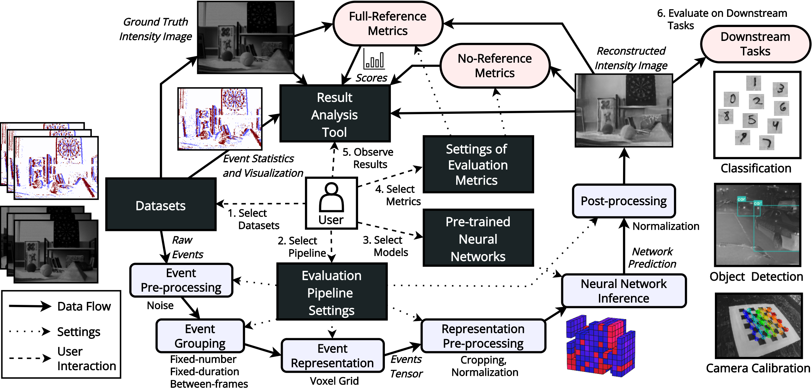

Here we present EVREAL - Event-based Video Reconstruction Evaluation and Analysis Library. Our open-source framework offers a unified evaluation pipeline to comprehensively benchmark PyTorch based pre-trained neural networks for event-based video reconstruction, and a result analysis tool to visualize and compare reconstructions and their scores.

We use a large set of real-world test sequences and various full-reference and no-reference image quality metrics to perform qualitative and quantitative analysis under diverse conditions, including challenging scenarios such as rapid motion, low light, and high dynamic range. Furthermore, we conduct additional experiments to assess the performance of each method under variable conditions and analyze their robustness to these varying settings, including event rate, event tensor sparsity, reconstruction rate, and temporal irregularity. Moreover, we evaluate the quality of video reconstruction for each method by analyzing its performance in downstream tasks, including camera calibration, image classification, and object detection. Overall, we believe that EVREAL will contribute to the development of more effective and robust event-based video reconstruction methods.
BibTeX
@inproceedings{ercan2023evreal,
title={{EVREAL}: Towards a Comprehensive Benchmark and Analysis Suite for Event-based Video Reconstruction},
author={Ercan, Burak and Eker, Onur and Erdem, Aykut and Erdem, Erkut},
booktitle={Proceedings of the IEEE/CVF Conference on Computer Vision and Pattern Recognition (CVPR) Workshops},
month={June},
year={2023},
pages={3942-3951}}
This work was supported in part by KUIS AI Center Research Award, TUBITAK-1001 Program Award No. 121E454, and BAGEP 2021 Award of the Science Academy to A. Erdem.